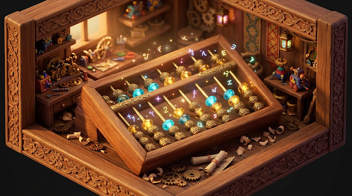

calculate
Abakus Kristal
KSSR Thn 1
graphic_eq
Bunyi Manik & Nada Melodi

auto_awesome Menara Nombor KSSR
Bengkel Ukiran Kristal
token
pin Nilai Semasa Abakus
Rumah Nilai Nombor
Rumah Puluh
1
= 10 Kristal
Rumah Sa
2
= 2 Kristal
Jumlah
12
Nilam
lightbulb
1 Puluh (10) + 2 Sa (2) = 12 Kristal Nilam
Papan Manik Chengal Berukir
Ketik manik untuk tolak!
domain
PULUH (x10)
grain
SA (x1)
Rasuk Kiraan (Tengah)
Manik Emas Atas = Nilai 5
Manik Nilam Bawah = Nilai 1
🐯
build
Si Rimau • Jurutera Menara
Petua Cilik
"Hebat Wira! Manik atas bernilai 5, manik bawah bernilai 1. Tolak 1 manik puluh dan 2 manik sa untuk membentuk nombor 12!"
military_tech
Misi Menara Nombor
+30 XP
Sasaran: Bentukkan Nombor 14
Tolak 1 Puluh (10) dan 4 Sa (4) ke palang!
14